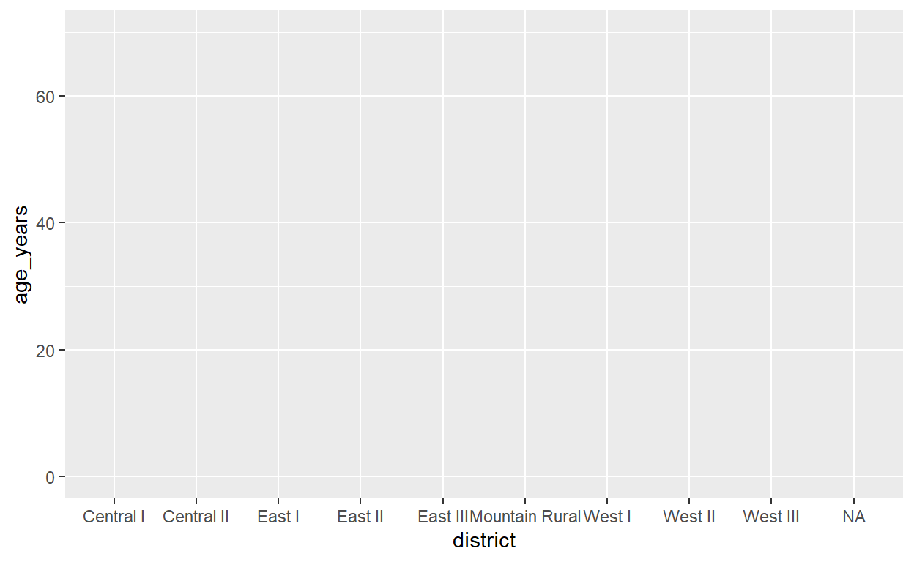

Introduction to R for Applied Epidemiology and Public Health
Welcome
Welcome to the live course “Introduction to R for applied epidemiologists”, offered by Applied Epi - a nonprofit organisation that offers open-source tools, training, and support to frontline public health practitioners.

Data visualization
This exercise focuses on the fundamentals of using {ggplot2} for data visualization.
Format
This exercise will guide you through a set of tasks.
You should perform these tasks in RStudio and on your local
computer.
Getting Help
There are several ways to get help:
- Look for the “helpers” (see below)
- Ask your live course instructor/facilitator for help
- Ask a colleague or other participant in the course for tips
- Post a question in Applied Epi Community in the category for questions about Applied Epi Training
Here is what those “helpers” will look like:
Click to read a hint
Here you will see a helpful hint!
Click to see a solution (try it yourself first!)
linelist %>%
filter(
age > 25,
district == "Bolo"
)Here is more explanation about why the solution works.
Quiz questions
Please complete the quiz questions that you encounter throughout the tutorial. Answering will help you to comprehend the material, and will also help us to improve the exercises for future students.
To practice, please answer the following questions:
Icons
You will see these icons throughout the exercises:
| Icon | Meaning |
|---|---|
| Observe | |
| Alert! | |
| An informative note | |
| Time for you to code! | |
| Change to another window | |
| Remember this for later |
Learning objectives
In this exercise you will:
- Learn the “grammar of graphics” syntax used by {ggplot2}
- Make simple histograms, box plots, bar plots, scatter plots, and
line plots
- Adjust the color, fill, and shape by adjusting plot aesthetic parameters
Prepare
Open the R project “intro_course”, as usual, by clicking on the R project icon in the “intro_course” folder.
Then, open your script “ebola_analysis.R”. You can locate this file by clicking the menus for “File -> Open File”, or by clicking your RStudio Files Pane (lower-right) and navigating to the file there.
Load packages
Add the {ggExtra} and {gghighlight} packages to the
pacman::p_load() command at the top of your script.
The {ggplot2} package does not need to be listed explicitly in this command, because it is included in the {tidyverse} mega-package (which should already be in your list of packages).
Run the previous code in your script
R does not necessarily remember which commands you ran in the previous session.
In fact, it is better for reproducibility if R does not remember. This forces you to write scripts that are independent, and do not rely on any previous commands having been run.
Look at your R environment pane (upper-right of RStudio). If you are viewing this tutorial in RStudio you may need to toggle to that pane for a moment.
Do you see any objects saved from the last session in the Environment? If so, click the small “broom” icon to clear all objects. This ensure that you start with a clean environment and you do not rely on any objects created in the last session.
Now, run all the commands in your script section-by-section, to do the following:
- Load packages
- Import the “raw”/unclean surveillance linelist
- Run the cleaning pipeline ( %>% ) that produces the clean
surveillance linelist
- Export the clean data frame
If you have arranged your script correctly and kept it clean, these commands should all be able to be run in sequence with no interruptions or errors.
Verify that you now have the data frame object
surv in your R Environment, with rows and columns ready to
be plotted
Remember that IF your script is malfunctioning and causing errors, you
can write a command to import the clean surv dataset that
you saved at the end of the previous module. You saved it as
“surveillance_linelist_clean_20141201.rds” in the “data/clean”
subfolder.
You can import this with the command
import(here("data", "clean", "surveillance_linelist_clean_20141201.rds")).
After doing this, please notify your facilitator that you will need
assistance cleaning your script so that it runs smoothly next time.
Create new script section for plotting
Create a new section below the other code, well documented with # symbols, for these exercises to create simple plots.
Build a plot
Do you know much information about each district, such as the age distribution, or the number of cases? Let’s build some plots that tell us more.
Open the plot
Any ggplot() command begins with the function
ggplot(). Within this function, the first argument is
data =. Provide the name of the dataset to this
argument.
Run the command below
ggplot(data = surv)
This has “opened” the plotting canvas for us to build further plot elements.
Map columns to “aesthetics”
Now that we have a canvas, we need to tell R what we want on the X-axis and on the Y-axis. The columns that we will map to the axes are simple examples of the plot’s “aesthetics”. Note this word “aesthetics” - the root aes becomes part of the next R command.
The second argument of ggplot() is
mapping = aes(). This is where you map columns in
the data to components of the plot. Specifically, this is for
components of the plot that you allow to vary for each row of
data.
For example, if we “map” the Y-axis to the column
age_years, then every row in the data will be evaluated and
may be placed on a different height on the Y-axis.
aes()
The mapping = aes() argument is atypical in that you
must provide the values to it within the aes()
function.
mapping = aes(x = COLUMN, y = COLUMN)
Remember that this code above is occurring within the
ggplot() function. The mapping = aes() itself
IS the second expected argument to ggplot().
Try to write a ggplot() command where you map the X-axis
to the column district, and Y-axis to the column
age_years, and then answer the questions about the plot
that appears in RStudio.
Click to see a solution (try it yourself first!)
ggplot(data = surv, mapping = aes(x = district, y = age_years))
Add geom layers
Now that we have our canvas, and we have designated our axes… we can begin to visualize the data!
This is done by adding geom_() commands, which each
create a different kind of visualization.
We have completed one full component of the ggplot()
command - the parentheses are closed, and the command can run without
error. So how do we add additional components to the plot?
Add components of the command with +
The “plus” symbol connects the different lines of the
ggplot() command. In some ways, it is like the pipe
operator, but links commands within the ggplot.
Add the plus, and on the new line write
geom_point(). Then run the command
Click to see a solution (try it yourself first!)
ggplot(data = surv, mapping = aes(x = district, y = age_years))+
geom_point()You can choose to indent the new command, to indicate to a reader
that it is a sub-component of the ggplot(), but the command
will run either way.
The geom_point() has visualized each row of the data
frame surv as as points, corresponding to their
district value (X-axis) and their age_years
value (Y-axis).
With a discrete variable on the X-axis and a continuous distribution on the Y-axis, it is difficult to know exactly how many cases there are! Each point represents one case, but you could be looking at 5 points of the same age that are overlapping and hiding each other.
Let’s try another geom to solve this problem. Replace
geom_point() with geom_jitter() and re-run the
command.
Click to see a solution (try it yourself first!)
ggplot(data = surv, mapping = aes(x = district, y = age_years))+
geom_jitter()Go to the Help pane of RStudio (by the Plots pane) and search for “geom_jitter” in the search bar in the upper-right.
This is the R documentation of the function
geom_jitter(). Every function, whether in {base} R, or in
an installed package, has documentation on its functions. You can access
this documentation offline - it is stored within R once the package is
downloaded.
Sometimes, this documentation is difficult to read. We will practice reading documentation throughout the course. However, there are often tutorials, guides, and “vignettes” online that are easier to read. We will also practice reviewing these.
For now, do the following:
Read the “Description” to understand exactly what the function is doing to avoid overlapping points.
Review the “Aesthetics” list near the bottom. These are other plot aesthetics that you can adjust, to vary the appearance of this geom layer.
Within the geom_jitter() function, enter a few of these
aesthetics and try adjusting them as follows:
color = "blue"
size = 5
shape = 4
Add more geoms
The jitter plot is nice, but let’s add some statistical display to
it. Add geom_boxplot() below the
geom_jitter() command.
Click to read a hint
Don’t forget to add a + at the end ofgeom_jitter()
Click to see a solution (try it yourself first!)
ggplot(data = surv, mapping = aes(x = district, y = age_years))+
geom_jitter()+
geom_boxplot()We can now see where summary statistical values lie for each district, such as the median and inter-quartile ranges. But the points are now hidden by the boxplots.
Add and adjust the alpha = aesthetic for the
boxplots only. What alpha value allows you to see the
plots?
Click to read a hint
Try several values between 0 and 1.
Click to see a solution (try it yourself first!)
ggplot(data = surv, mapping = aes(x = district, y = age_years))+
geom_jitter()+
geom_boxplot(alpha = 0.5)Violin plots
As alternative, replace the geom_boxplot() with
geom_violin(), and use the same alpha = level
as before to have some transparency.
ggplot(data = surv, mapping = aes(x = district, y = age_years))+
geom_jitter()+
geom_violin(alpha = 0.5)There is not much difference in the case ages between each district… let’s try a violin plot on another topic. Try this code:
ggplot(data = surv, mapping = aes(x = gender, y = ht_cm))+
geom_violin(alpha = 0.5, size = 2)Think about the following questions:
- What does the violin plot communicate that the boxplot does
not?
- What does the box plot communicate that the violin plot does
not?
- What do the points show that either the box or violin plot do not?
What do you think is generally the best combination of these three geoms (points, boxplots, violins)?
Dynamic aesthetics
Until now, you have been editing aesthetics like color,
alpha, size, and shape by
assigning them to static values such as 3, “blue”, or
0.2.
Now, we will assign them to columns, and the display for each point in the data will vary
Boxplot fill
Let’s re-build our old boxplot, with the aesthetic
color statically-assigned to “blue”, and alpha
statically-assigned to 0.5:
ggplot(data = surv, mapping = aes(x = district, y = age_years))+
geom_jitter()+
geom_boxplot(fill = "blue", alpha = 0.5)Now change the command so that fill is assigned
to the column district.
There are two important steps to resolve this error:
- Change the value “blue” to
district(note the lack of quotes arounddistrict)
- Move this argument to within the
mapping = aes()in the topggplot()function
Because we are assigning a column to the aesthetic
fill =, it must be done within the “mapping” of the ggplot.
Remember how we assigned columns to the X-axis and the Y-axis? Those
assignments were dynamic as well, and they are located within the
mapping = aes().
Click to see a solution (try it yourself first!)
ggplot(data = surv, mapping = aes(x = district, y = age_years, fill = district))+
geom_jitter()+
geom_boxplot(alpha = 0.5)Note the legend that has automatically appeared on the right side of the plot.
How have missing values been treated in this plot? How are they marked? Which color was automatically assigned to them? Where in the order do they appear, along the X-axis and in the legend?
Point color
How would you change the color of the points?
Be aware of this nuance: For geoms that have area, such as
box plots, histograms, and bar plots, the inside color is
changed with the fill aesthetic. However, the color
appearance of points (including geom_jitter()) are changed
with the aesthetic color.
Change the color of the points to also vary by district, and
set the box plot’s alpha = 0.
Click to see a solution (try it yourself first!)
ggplot(data = surv, mapping = aes(x = district, y = age_years, fill = district, color = district))+
geom_jitter()+
geom_boxplot(alpha = 0)Now, remove the color = district from the
mapping = aes() - return the points to their
original black.
Labels (and indenting)
Let’s add a few quick labels to make our box plot more clear.
Add labs() to the bottom of the command
(using a + symbol), and provide the following arguments within the
function:
title = "My title
subtitle = "Subtitle here"x = "District"
y = "Age (years)"
caption = "Among an Ebola outbreak, 2014"
fill = "District"
Click to see a solution (try it yourself first!)
ggplot( # open the ggplot
data = surv, # use surveillance linelist
mapping = aes( # assign columns to plot aesthetics
x = district, # district on the x-axis
y = age_years, # age on the y-axis
fill = district))+ # fill of boxplots by district
geom_jitter()+ # add jittered points
geom_boxplot( # add boxplots, semi-transparent
alpha = 0.5)+
labs( # add labels to plot
title = "My title",
subtitle = "Subtitle here",
x = "District",
y = "Age (years)",
caption = "Among an Ebola outbreak, 2014",
fill = "District"
)Now look at the solution code above - What is
different about it, aside from the new labs() command?
It has been written in a “longer” format. For any parentheses, arguments are written after a newline and an indent. This can be read more easily, like a Table of Contents:
- ggplot(
- dataset
- column mappings (
- x-axis
- y-axis
- fill ))+
- x-axis
- dataset
- geom_jitter()+
- geom_boxplot( alpha )+
- labs(
- title
- subtitle
- x axis label
- y axis label
- caption
- legend
)
- title
The indenting and newlines will not impact the execution of the code, but now you have space on the right to add # comments.
While it can take more time to write detailed comments, it can really help people in the future who are reading your code and wondering what you are doing (including for yourself in the future!).
Bar plots
Now that you have explored points, jittered points, boxplots, and violins, let’s try some other geoms:
A bar plot could be used to show the number of cases reported in each district.
Try a command using the geom
geom_bar().
Note that you should only supply an x = aesthetic -
there is no need for y = as the number of rows in the
dataset will be counted individually.
Click to read a hint
In this new ggplot command, remove the geom_jitter() and
geom_boxplot() commands. Replace them with one
geom_bar() command.
Click to see a solution (try it yourself first!)
ggplot(data = surv, mapping = aes(x = district))+
geom_bar()The rows in the data have now been displayed as a bar plot!
Can you change the bars to all be the color “lightblue” using the
fill argument? (think: where should this argument be
placed, seeing as “lightblue” is an assignment to a static value)
Set the fill aesthetic dynamically
The previous plot examined age as a continuous variable (on the Y-axis).
How would we change the previous plot show the age distribution in each district?
Change the plot so that the fill aesthetic is
assigned dynamically, to a categorical column in the
dataset.
Click to read a hint
Assign fill to the column age_cat.
Click to see a solution (try it yourself first!)
ggplot(data = surv, mapping = aes(x = district, fill = age_cat))+
geom_bar()Now we can see the age categories in the legend, and bars are “stacked”.
Order of stacked bars
What if you want to reverse the order of the bars?
Perhaps you want the youngest age category on the bottom: we’ll give you this code:
ggplot(data = surv, mapping = aes(x = district, fill = fct_rev(age_cat)))+
geom_bar()In the above code we’ve used the fct_rev() function,
which comes from the {forcats} package. We’ll explain more later, but
this package contains functions that create explicit ordering of values.
By wrapping the fct_rev() around the column
age_cat, ggplot reverses the default ordering of that
variable.
If the colors look ugly to you, don’t worry. We’ll learn later how to adjust the colors.
Adjacent bars
geom_bar() accepts the argument position =,
which can be assigned to the value “dodge”. Try to add this argument to
geom_bar() and see what happens (don’t forget the quotation
marks).
Click to see a solution (try it yourself first!)
ggplot(data = surv, mapping = aes(x = district, fill = age_cat))+
geom_bar(position = "dodge")Bar plots from count data
Until now, we have used our surveillance linelist to create these plots. The plots are treating each row as one data point. For example, in the bar plot, each row has been stacked on top of the others.
But often we have to deal with datasets that arrive as counts (e.g. weekly number of malaria cases reported by each county). This can happen also if a particular reporting facility is overwhelmed and can no longer report detailed case information.
To explain how to handle these data, we will first practice the skills from the previous module, by creating a counts dataset:
Create a new dataset that includes only the total case counts
per district. Use your knowledge of the {dplyr}
functions group_by() and summarise() to do
this, and save the data frame as
case_counts_district.
Click to read a hint
Begin with the surv data frame and pipe into
group_by(district). Then, summarise() and
create a column in the new summary data frame that is created using
n() (to return the total number of rows in each district
group).
Click to see a solution (try it yourself first!)
case_counts_district <- surv %>%
group_by(district) %>%
summarise(n_cases = n())| district | n_cases |
|---|---|
| Central I | 37 |
| Central II | 44 |
| East I | 31 |
| East II | 76 |
| East III | 12 |
| Mountain Rural | 203 |
| West I | 17 |
| West II | 126 |
| West III | 115 |
| NA | 2 |
When your data use counts, do not use geom_bar().
geom_bar() records one bar segment for each
row of data.
Try running this command and see what the result is (note the changed dataset):
ggplot(data = case_counts_district, mapping = aes(x = district))+
geom_bar()That is not the plot we want! The geom_bar() has
accepted the data and recognized only one row for each district.
Consequently, it has plotted exactly one bar for each district, at
height 1.
How to fix this?
- Add the aesthetic
y = n_caseswithin the ggplot mappings. This is assigning the bar height to the numeric count value.
- Change
geom_bar()togeom_col()
Now run the command. It should look exactly the same as the default
correct geom_col() command, when used on the
surv linelist dataset.
ggplot(data = case_counts_district, mapping = aes(x = district, y = n_cases))+
geom_col()What made this work?
The function geom_col() is built to handle count data -
it does not stack the dataset rows in top of each other, but rather
accepts a y = column of count values, and draws the columns
with heights that correspond to those values.
It is important to remember the difference between
geom_bar() (for linelist data) and geom_col()
for count data.
Lastly, try to add a fill = aesthetic mapping to
make the bar show age group. Can you do this with count
data?
(no, you cannot, because in using count data we have lost the detail available in a linelist)
Scatter plots
Write a new ggplot() command that uses the
surv surveillance linelist. Use
geom_point(), and two continuous variables:
age_years and ht_cm assigned to the X-axis and
Y-axis, respectively.
Next, add the aesthetic color = and assign it
dynamically to the column age_cat.
Click to read a hint
Color of points is adjusted with the color = aesthetic
(fill is for shapes like bars and histograms). Be sure to
place this assignment within the
mapping = aes()
Click to see a solution (try it yourself first!)
ggplot(data = surv, mapping = aes(x = age_years, y = ht_cm, color = age_cat))+
geom_point()This looks pretty, but is not actually that useful. Yet, it does serve to show that the age categories are aligning with the continuous values.
What if you dynamically assign the aesthetic color = to
the column gender? Are you able to see any pattern in the
data? It is still difficult.
ggplot extension packages
Try this advanced R code below. There is a package {ggExtra} that provides several functions that add functionality to ggplots.
Add this function to your list of packages to load, and re-run your {pacman} command so that this package installs and loads for use.
Now, run the command below:
height_plot <- ggplot(data = surv, mapping = aes(x = age_years, y = ht_cm, color = gender))+
geom_point()
ggMarginal(height_plot)What is happening above?
We have assigned the ggplot command a name (
height_plot) and saved it as an object. Look, it appears in the R Environment now as an object that you can reference in other commands.The second command uses the {ggExtra} function
ggMarginal(). This is a function that draws distributions in the “margins” (outsides) of the plot.- The first argument of
ggMarginal()accepts the name of our pre-defined plotheight_plot. It prints the plot with the marginal distributions.
- The first argument of
Now run the command again, but with the groupFill = TRUE
argument specified.
ggMarginal(height_plot, groupFill = TRUE)Add smoothed means to a scatterplot
**Finally, try another scatterplot, using date_report on
the X-axis and diff on the Y-axis. Add
geom_smooth() to see a trend line.
Click to see a solution (try it yourself first!)
ggplot(data = surv, mapping = aes(x = date_report, y = diff))+
geom_point()+
geom_smooth()Go again the Help RStudio pane (near the plots pane
in the lower-right). Type geom_smooth in the search bar.
Read the “Details” section to understand exactly what
geom_smooth() does to produce it’s line and confidence
interval.
Histogram
Histograms are used to show the distribution of
continuous variables. If you have a column with
numbers, or dates, it is better to use geom_histogram()
(not geom_bar() or geom_col()).
Basic histogram syntax
We will cover Epidemic Curves in depth in a later module, but for now:
Make a basic date histogram by assigning the X-axis to the
column date_onset. Change it’s default coloring to
“darkgreen”
Click to read a hint
For geom_histogram(), the color of the “bars” is
actually the fill. Adjust it by assigning
fill =. If assigning to a static color, the assignment
should be made outside of aes() (within
geom_histogram()).
Click to see a solution (try it yourself first!)
ggplot(data = surv, mapping = aes(x = date_onset))+
geom_histogram(fill = "darkgreen")Warnings and Errors
Look in your R console, where the command is printed that you ran. Do you see a warning, written in red?
In R, a “warning” is given if R was able to execute your command, but it encountered something unexpected that it thinks you should know.
In contrast, an “error” means that R was unable to execute your command.
Stacked histograms
Now try making a histogram for the column
age_years, with fill assigned dynamically to
gender.
Click to see a solution (try it yourself first!)
ggplot(data = surv, mapping = aes(x = age_years, fill = gender))+
geom_histogram()You now have “stacked” histograms. These can be difficult to interpret sometimes, but are a useful tool to have.
Histogram breaks
Histograms show “bars”, but there is no space between the bars. This is because the variable is continuous. Still, the size and frequency of the “histogram bins” can be adjusted.
Try running the histogram with the following adjustments (one at a time):
bins = 100withingeom_histogram()
bins = 5withingeom_histogram()
bin_width = 5withingeom_histogram()
Click to see a solution (try it yourself first!)
ggplot(data = surv, mapping = aes(x = age_years, fill = gender))+
geom_histogram(bins = 100)
ggplot(data = surv, mapping = aes(x = age_years, fill = gender))+
geom_histogram(bins = 5)
ggplot(data = surv, mapping = aes(x = age_years, fill = gender))+
geom_histogram(binwidth = 5)Facets
That stacked histogram can be difficult to interpret. Faceting in R is the process of creating one smaller plot for each unique level of a variable (also called “small-multiples”).
This is done by adding the command facet_wrap() to the
ggplot command. Within this function, write a tilde (~) and the name of
the faceting column on the right side.
Try to facet this histogram by gender (leave
fill = district as well).
ggplot(data = surv, mapping = aes(x = date_onset, fill = district))+
geom_histogram()+
facet_wrap(~ district)Click to see a solution (try it yourself first!)
ggplot(data = surv, mapping = aes(x = date_onset, fill = district))+
geom_histogram()+
facet_wrap(~ district)Now try another plot: instead of gender, set the
plot to be faceted by district. You can choose to
remove the fill = gender, for clarity. It will not have an
impact on the faceting.
You can read more about faceting in this section of the Epi R Handbook.
End
Congratulations! ggplot is a difficult subject, but a tool that offers many rewards once you understand the basics. We will reinforce this more in the coming days.
Extra - gghighlight
Just like {ggExtra}, the package {gghighlight} is an extension that works with {ggplot2} to add functionalities for your plotting.
Many R packages have “vignettes” to assist people using the package. Go online and view this {gghighlight} vignette to answer the questions below:
Now, make a histogram using the following settings:
- The histogram is of
date_onset
- The color (
fill) is bydistrict
- Faceting by district
- Add
gghighlight()
Finally, make a variation of this plot:
- No faceting
- The
gghighlight()only highlights the cases from “West II”
Click to see a solution (try it yourself first!)
# Plot 1
########
ggplot(data = surv, mapping = aes(x = date_onset, fill = district))+
geom_histogram()+
facet_wrap(~ district)+
gghighlight()
# Plot 2
########
ggplot(data = surv, mapping = aes(x = date_onset, fill = district))+
geom_histogram()+
gghighlight(district == "West III")